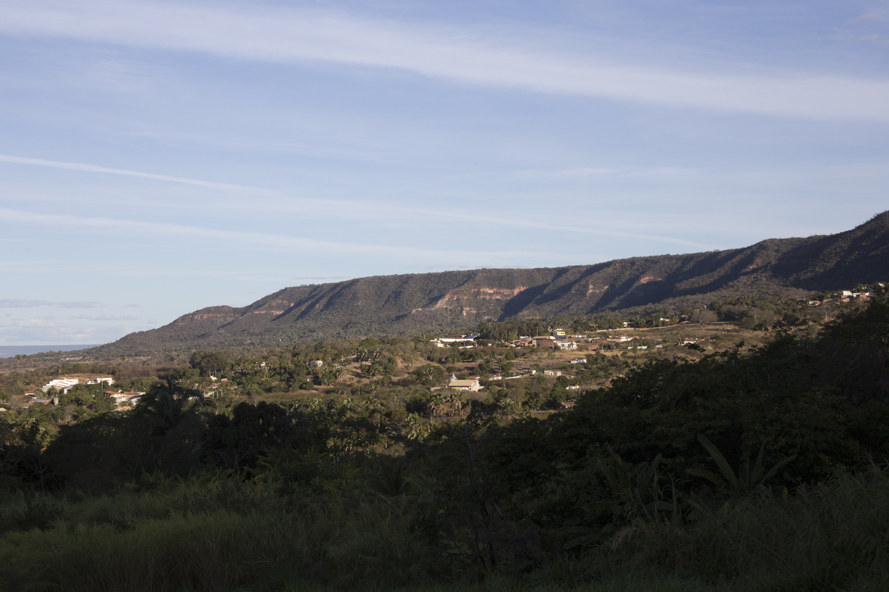

Meio Ambiente
Chapada do Araripe: Um tesouro natural do Cariri
A Chapada do Araripe é uma região de grande importância ecológica e geológica, conhecida por suas formações rochosas únicas e biodiversidade. É um destino popular para ecoturismo e estudos científicos.